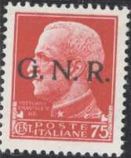

Return To Catalogue - Italy overview - Italy socialist republic, local overprints
Note: on my website many of the
pictures can not be seen! They are of course present in the
catalogue;
contact me if you want to purchase the catalogue.
This republic was founded by Italian fascists after the retreat of the Germans in the Northern part of Italy.

5 c brown
10 c brown
15 c green (red overprint)
20 c red
25 c green (red overprint)
30 c brown
35 c blue (red overprint)
50 c violet
75 c red
1 L violet
1.25 L blue (red overprint)
1.75 L orange
2 L red
2.55 L green (red overprint)
3.70 L violet
5 L red
10 L violet
20 L green (red overprint)
25 L dark green (red overprint)
50 L violet
On airmail stamps ('POSTA AEREA')
25 c green (red overprint)
50 c olive
75 c light brown
80 c orange
1 L violet
2 L blue (larger sized stamp, red overprint)
5 L green (red overprint)
10 L red
On Airmail Express stamp
2 L grey (red overprint)
On Express stamp ('ESPRESSO')
1.25 L green (red overprint)
2.50 L orange
On stamps with attached labels
25 c green (navy, red overprint)
25 c green (army, red overprint)
25 c green (air force, red overprint)
25 c green (knife and helmet, red overprint)
30 c brown (navy)
30 c brown (army)
30 c brown (air force)
30 c brown (knife and helmet)
50 c violet (navy)
50 c violet (army)
50 c violet (air force)
50 c violet (knife and helmet)
On postage due stamps ('SEGNATASSE')
5 c olive
10 c blue
20 c red
25 c green (red overprint)
30 c orange
40 c black (red overprint)
50 c violet
60 c black (red overprint)
1 L orange
2 L green
5 L violet
10 L blue (red overprint)
20 L red
On authorized delivery stamps 'RECAPITO AUTORIZZATO'
10 c brown (black or red overprint)
Specialists distinguish between Brescia and Verona printings. Some of these overprints are quite rare and forged overprints exists. The 10 c is the most common with 500.000 stamps overprinted, of the 20 L, 25 L and 50 L only a few thousand stamps were overprinted. The airmail overprints are not very common, about 1000 to 25.000 stamps were overprinted (depending on the value).
25 c green (overprinted with text and axe) 30 c brown (overprinted with red axe) 50 c violet (overprinted with red text) 75 c red (overprinted with text and axe as 25 c) 1.25 L blue (overprinted with red axe as 30 c) On express stamps 1.25 L green (red overprint and red axe) 2.50 L orange (black overprint with black axe) On stamps with attached labels
25 c green (navy, axe and text)
25 c green (army, axe and text)
25 c green (air force, axe and text)
25 c green (knife and helmet, axe and text)
30 c brown (navy, red overprint, axe only)
30 c brown (army, red overprint, axe only)
30 c brown (air force, red overprint, axe only)
30 c brown (knife and helmet, red overprint axe only)
50 c violet (navy, red text)
50 c violet (army, red text)
50 c violet (air force, red text)
50 c violet (knife and helmet, red text)
Axe overprint on postage due stamps ('SEGNATASSE')
5 c olive 10 c blue 20 c red 25 c green 30 c orange 40 c black 50 c violet 60 c black 1 L orange 2 L green 5 L violet 10 L blue 20 L red On parcel post stamps 'REP.SOC. ITALIANA' on the 'SUL BOLLETINO' part and axe on the 'SULLA RICEVUTA' part
5 c brown 10 c blue 25 c red 30 c blue 50 c yellow 60 c red 1 L lilac 2 L green 3 L yellow 4 L grey 10 L light brown 20 L brown On authorized delivery stamps 'RECAPITO AUTORIZZATO'
10 c brown (small axe overprint) 10 c brown (larger axe overprint) 10 c brown (axe and 'REPUBBLICA SOCIALE ITALIANA' overprint)
Specialists distinguish between the Rome, Verona, Florence, Genoa, Turin and Milan (25 c, 50 c and 75 c only) overprints; slight differences in overprint impression and ink can be found between those prints.
Stamps with overprint 'ISTRA' were issued for the Yugoslavian occupation of Istria:

1.25 L green (Palermo - Duomo)
This stamp is very common (about 20 million stamps were issued). Various local overprints exist:
'FIUME RIJEKA' overprint;
Yugoslavian occupation of Fiume

kg 1 brown
5 c olive (Ancona - S.Ciriaco) 10 c olive (Abbazia di Montecassino) 20 c red (Bologna Loggia dei Mercanti, first type, '20' bottom right) 20 c red (Bologna Loggia dei Mercanti, second type, '20' upper right) 25 c green (Roma - S.Lorenzo, first type, '25' bottom right) 25 c green (Roma - S.Lorenzo, second type, '25' upper left) 30 c brown (man with drum 'Tamburino') 50 c violet (lady with axe; symbol of the republic) 75 c red (man with drum 'Tamburino') 1 L violet (Abbazia di Montecassino) 1.25 L blue (Milano S.Maria Della Grazie) 3 L green (Milano S.Maria Della Grazie) Overprinted 'POSTE ITALIANE' and surcharged
'Lire 1,20' on 20 c red (on second type) '2 LIRE' on 25 c green (on second type)
These stamps are very common. Nevertheless the 50 c violet stamp has been forged (see http://www.giorgiobifani.net/rsi14dd_eng.htm for more details).
Several local overprints exist, examples:

Stamps with overprint "ISTRA" were issued for the Yugoslavian occupation of Istria:
"FIUME RIJEKA" overprint; Yugoslavian occupation of Fiume:
25 c green 1 L violet 2.50 L red
Many local overprints exist, examples:
Websites: http://www.giorgiobifani.net/index_eng.htm.
Stamps - Francobolli - Timbres - Briefmarken - Postzegels